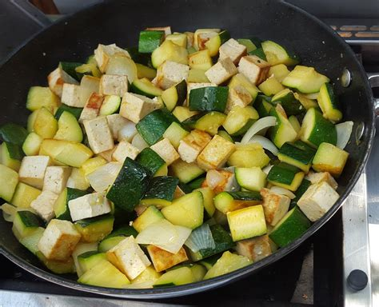

Tofu with Zucchini and Bottarga

Description
The Tofu is a plant-based food made from soybeans. It's created by coagulating soy milk and pressing
the curds into soft, white blocks. As you would correctly guess, this food tastes like literally nothing.
BUT.
This recipe is a great way to make the tofu not only edible but - hear me out - also tasty!!!
Here's how it's done.
Ingredients
- Tofu - 200 g
- Zucchini - 1 medium sized, sliced on cubes
- Bottarga - 20-30 g grated
- Olive oil - 2-3 tablespoons
- Lemon zest - 1 teaspoon
- Fresh parsley - a handful, chopped
- Salt - to taste
Recipe
- Press the tofu to remove excess moisture. You can do this by wrapping the tofu in a clean kitchen
towel and placing a weight on it for about 15-20 minutes.
- Once the tofu is pressed, cut it into small cubes.
- Heat 1-2 tablespoons of olive oil in a large skillet over medium heat.
- Add the sliced zucchini and cook until they start to soften and turn slightly golden, about 5-7 minutes.
- Season with a pinch of salt.
- Add another tablespoon of olive oil.
- Add the cubed tofu to the skillet and cook until it's lightly golden on all sides, about 5-8 minutes.
- Season with salt.
- Add the lemon zest and half of the chopped parsley. Toss everything together gently.
- Remove the skillet from the heat and sprinkle the grated bottarga over the tofu and
zucchini mixture. Gently toss to combine, ensuring the bottarga coats the tofu and zucchini evenly.
- Transfer the mixture to a serving dish.
- Garnish with the remaining parsley and an extra drizzle of olive oil if desired.
- Bon appetit!
Other Recipes